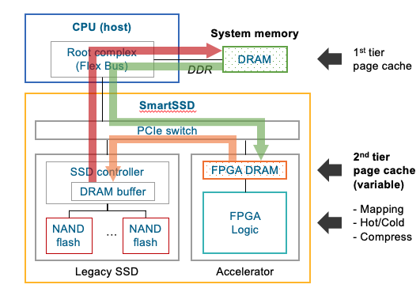
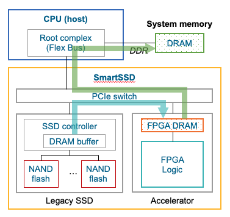
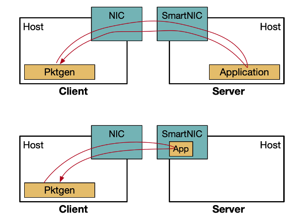
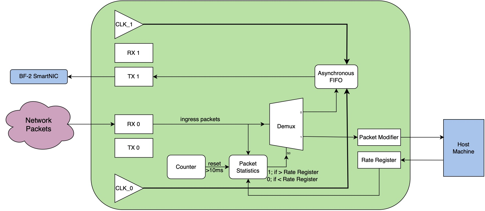
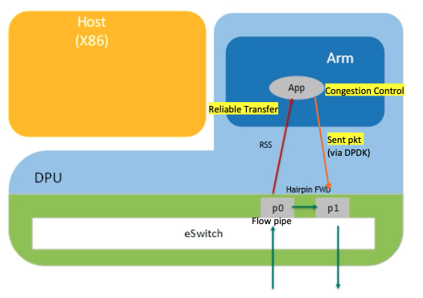

Research&Projects
I will introduce some of my past projects, including both research and course projects.
1. Selected Research Projects
Computational Storage Drive: Use SmartSSD as Page Cache Expander
Advisor: Dr. Ipoom Jeong, Prof. Nam Sung Kim (University of Illinois Urbana-Champaign)

This project aims to use SmartSSD as a page cache expander to perform page cache compression and other page cache management operations. By using the FPGA DRAM on SmartSSD to store victim page cache entries and FPGA logic to manage compressed page cache, we try to develop an OS-transparent schemes that require no OS intervention during page cache compression.
My duty includes:
- setup environment and complete basic configuration steps
- explore the basic use of SmartSSD, including performance test (bandwidth, parallelism..) and test program coding
- implement the compression algorithm on FPGA, currently the LZ77 algorithm is implemented and working in SmartSSD(further optimization to be expected).
Database Filter with SmartSSD
Advisor: Dr. Ipoom Jeong, Prof. Nam Sung Kim (joint project with CS Department) (University of Illinois Urbana-Champaign)
University of Illinois Urbana-Champaign

This project aims to offload Database filter functions to SmartSSD. The basic philosophy is: store the large scale data in SSD (with .csv form) -> load the data from SSD to FPGA DRAM -> perform database filter -> load the filtered data from FPGA DRAM to CPU DRAM -> perform other operations in server CPU.
My duty includes:
- implement shell script to perform some file operations
- implement several datapath for data loading and filtering, include SSD->FPGA DRAM/SSD->CPU DRAM/FPGA DRAM->CPU DRAM
- implement the filter function in SmartSSD
- setup experiments for datapaths testing
SmartNIC-Server Heterogeneous Computing: Improve Performance of Hybrid Cloud Servers
Advisor: Jinghan Huang (Ph.D. candidate), Prof. Nam Sung Kim (University of Illinois Urbana-Champaign)
University of Illinois Urbana-Champaign

TO BE UPDATED
The potential TCP protocol offloading with NVIDIA Bluefield2 SmartNIC
Advisor: Prof. Jialin Li (National University of Singapore)

With the instructions of Prof. Jialin Li, I studied NVIDIA BlueField DPU. We try to use the DOCA framework to develop primary functions of TCP protocol on the DPU. And with the use of Packet Process Hardware Acceleration provided by the DOCA frame, I propose the potential scheme to offload the main TCP stack to the DPU and present to industry-oriented research group
Representation and Extraction of Diesel Engine Maintenance Knowledge Graph
Advisor: Prof. Hongwei Wang (Zhejiang University)
Members: Yihong Jin, Guanshujie Fu, Liyang Qian, Hanwen Liu
Designed a framework to extract bidirectional relations through a novel combination of reports preprocessing, BERT model and Bi-LSTM-CRF model. Enabled the framework to construct diesel engine maintenance knowledge graph based on data set collected from power plants, automatically extract key information from the unstructured text in maintenance reports, transfer the extracted results into a structured knowledge graph using Neo4j, and construct bidirectional relations in the graph using Protégé
2. Selected Course Projects
[ECE385] FPGA-based Graphic Design
Course Name: Digital System Laboratory
Developed an FPGA-based version of video game using SystemVerilog along with SoC, capable of processing and outputting complex graphics (60fps, 640*480 resolution) to VGA in a high frame rate and enabling keyboard control. We choose the the famous video game called 'i wanna be the guy' to implement
[ECE391] Unix-like OS Kernel Design
Course Name: Computer System Engineering
Led a team to design and implement an OS kernel resembling Linux with basic and advanced features. The kernel includes disk read/write, file system support, virtual memory, scheduling, interrupts & exceptions and etc. Designed a high-resolution (60fps, 800*600 resolution) graphic user interface with standard VGA capable